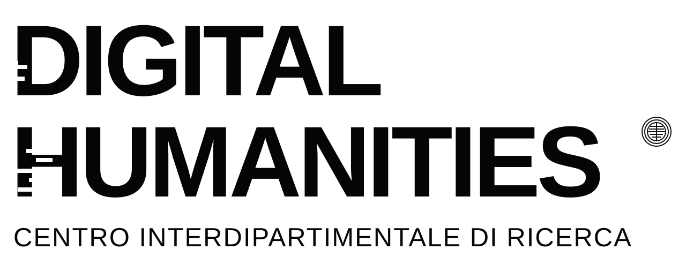
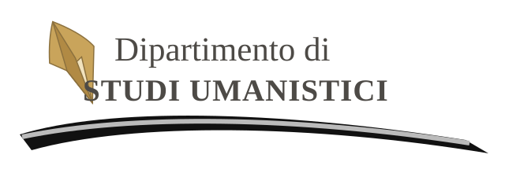

Testi e linguaggi
Edizioni digitali, analisi dei testi e linguistica computazionale: strumenti per interrogare le fonti e approfondirne l’interpretazione.
Filologia digitale / Corpora / Analisi testuale


Digital Humanities · UniSalento
Connettere discipline, esplorare nuovi metodi, valorizzare la conoscenza. Un luogo d’incontro tra ricerca umanistica e cultura digitale all’Università del Salento.
Esplora la ricerca Conosci il Centro01 / Il Centro
Il Centro Interdipartimentale di Ricerca in Digital Humanities dell’Università del Salento mette al centro il dialogo tra le discipline umanistiche e gli strumenti digitali.
Le Digital Humanities aprono nuove possibilità per studiare, interpretare e condividere il patrimonio culturale: dai testi alle immagini, dagli archivi ai dati. Una prospettiva interdisciplinare che unisce attenzione alle fonti e sperimentazione metodologica.
Ricerca · Cultura · Innovazione02 / Ambiti di ricerca
Prospettive e metodi delle Digital Humanities per esplorare la complessità del patrimonio umanistico.
Edizioni digitali, analisi dei testi e linguistica computazionale: strumenti per interrogare le fonti e approfondirne l’interpretazione.
Filologia digitale / Corpora / Analisi testuale
Digitalizzazione, descrizione e rappresentazione di documenti, oggetti e luoghi per rendere il patrimonio culturale più accessibile.
Archivi / Biblioteche / Patrimonio culturale
Modelli di dati, mappe e visualizzazioni per mettere in relazione le conoscenze e costruire nuovi percorsi di ricerca.
Dati aperti / Reti / Cartografia digitale
03 / Attività e prospettive
Spazi di lavoro e condivisione tra cultura umanistica e competenze digitali.
Metodi e strumenti digitali come terreno di dialogo tra domande di ricerca, fonti e discipline diverse.
Approfondimenti su pratiche, risorse e competenze per orientarsi nel panorama delle Digital Humanities.
Riflessioni sull’accesso alla conoscenza, sulla valorizzazione delle fonti e sul riuso responsabile dei dati.
Il calendario delle iniziative e i dettagli delle attività saranno pubblicati in questa sezione.
04 / Contatti e riferimenti
Per conoscere il contesto istituzionale del Centro, visita il portale dell’Università del Salento.
I recapiti diretti del Centro sono in aggiornamento e saranno pubblicati qui appena disponibili.